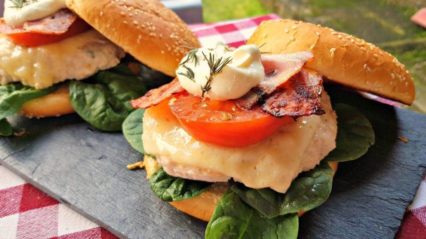

Hamburguesa de pollo
-
Tiempo de preparacion: 10 minutos.
-
Tiempo de cocinado: 20 minutos.
-
Tiempo total: 30 minutos.
Ingredientes
- 1.2 kgr de pollo picado.
- Sal y pimienta blanca.
- 12 lonchas de beicon.
- Espinacas.
- 3 tomates.
- 70 ml de zumo naranja.
- 200 gr de queso crema.
- 4 pepinillos.
- 1/2 cucharadita de pimienta blanca.
- 1/2 cucharadita de ajo en polvo.
- 6 panes de hamburguesas
Como hacer la hamburguesa de pollo al horno
- En un bol alineamos la carne de pollo que vamos a emplear para hacer nuestras hamburguesas de pollo caseras. Echamos un poco de pimienta blanca molida, un poco de sal al gusto y un poco de tomillo natural.
- Cogemos los trozos de carne, aproximadamente 200 gramos por cada hamburguesa.
- Con esta carne formamos nuestra hamburguesa. Si se os pega no os preocupéis más jugosa estará luego.
- El grosor de las hamburguesas tiene que ser de 1,5 cm más o menos. Tiene que tener el tamaño similar al del pan.
- Llevamos la hamburguesa a una bandeja de horno. En la bandeja previamente hemos puesto papel de horno.
- Una vez que tenemos las hamburguesas de pollo en el papel del horno, precalentamos el horno a 180 grados con calor arriba y abajo.
- Metemos la bandeja en la mitad del horno..
Preparacion.
- En un cuenco, echamos queso crema.
- Añadimos zumo de naranja y una cucharadita de miel.
- Echamos un pepinillo cortado en trocitos..
- Con la ayuda de un tenedor, mezclamos todo hasta que quede una salsa homogénea. La textura tiene que ser tipo mayonesa.
- Añadimos especias. Un poco de ajo en polvo y otra media cucharadita de pimienta blanca molida.
- Freímos las lonchas de beicon..
- Aprovechando el calor de la plancha, he colocado unos tomates que he cortado previamente con un grosor de 1 cm o 0,5 cm..
- Al tomate le echamos un poco de sal y de orégano.
- Al tomate le tenemos 1 minuto por cada lado y le sacamos..
- Una vez ya frito el beicon lo sacamos de la plancha y los reservamos.
- Ahora tostamos un poco el pan de la hamburguesa.
- Una vez que ya está tostado el pan, pasamos a montar la hamburguesa.
- La carne lleva 12 minutos en el horno.
- Los últimos minutos colocamos una loncha de queso. Puedes poner el queso que más te guste. Dejaremos las hamburguesas de pollo en el horno hasta que el queso se funda aproximadamente 3 minutos.
- Pasados estos 3 minutos ya tenemos nuestras hamburguesas de pollo listas.
- Ahora en un plato, colocamos la base del pan de la hamburguesa.
- Echamos un poquito de nuestra salsa.
- Sobre la salsa si queréis podéis colocar unas lonchas de pepinillo.
- Sobre el pepinillo podemos echar lechuga, espinaca, canónigos; lo que más os guste. A mi me parece que la espinaca le da un toque un poco crunch a la hamburguesa.
- Ponemos la carne de hamburguesa. Ponemos una rebanada de tomate. Una loncha de beicon frito. Echamos un poco más de nuestra salsa. Ponemos un poco de tomillo natural y colocamos la parte superior del pan. Ya tenemos nuestra hamburguesa de pollo casera.